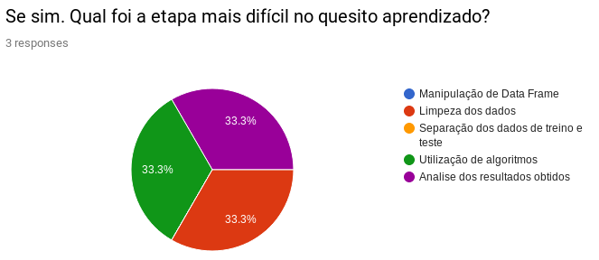
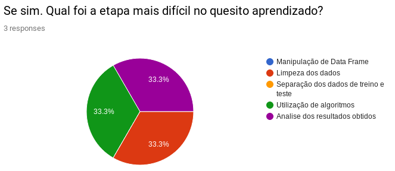

Histórico de Revisão
| Data | Versão | Alteração | Autor |
|---|---|---|---|
| 25/04/2019 | 1.0 | Criação do documento | Carlos Aragon |
Requisitos
Os requisitos do projeto foram elicitados com base nas demanda solicitada pela matéria de EPS. Utilizando as técnicas de brainstorming e questionário foi construído um backlog.
Brainstorming
Esta técnica foi utilizada devido ao contexto do bot. Por ser um bot de ensino a respeito do tema de machine learning, tema de domínio por parte do grupo de EPS, foi escolhido uma lista de temas e subtemas aos quais os membros tiveram maior grau de dificuldade no processo de aprendizagem do tópico machine learning. Os temas e subtemas fdefinidos foram:
- Pré-processamento de dados
- Importação de dados (Pandas)
- Tratamento de dados (Pandas), (SciKit Learn)
- Modelagem
- Aprendizado supervisionado (SciKit Learn)
- Aprendizado não-supervisionado (SciKit Learn)
- Visualização
- Visualização de dados (Matplotlib), (Seaborn)
- Visualização de resultados (SciKit Learn)
- Tutorial
- Iris Flower (SciKit Learn)
- MNIST (SciKit Learn)
- Titanic (SciKit Learn)
- Sugestões de conteúdo
- Espaços de conteúdos (Medium), (TowardsDataScience), (Kaggle)
- Fórum (Cross Validated), (Artificial Intelligence StackExchange)
Questionario
O questionário foi desenvolvido buscando validar algumas funcionalidades propostas pelo grupo. Devido ao baixo número de respostas o questionário não foi utilizado como fator primário de validação, servindo de apoio a introspecção dos membros de MDS que para a confecção do projeto passam pelo processo de aprender ml, alertando assim sobre as áreas críticas de seu aprendizado.
 
